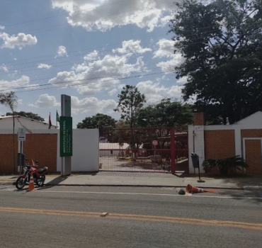
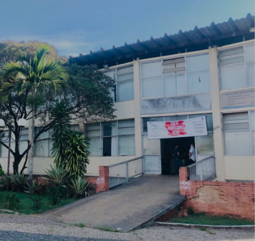
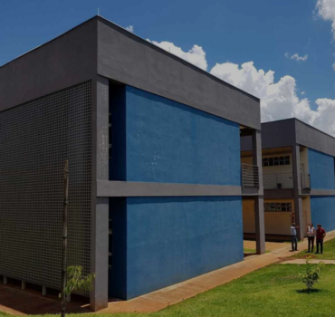
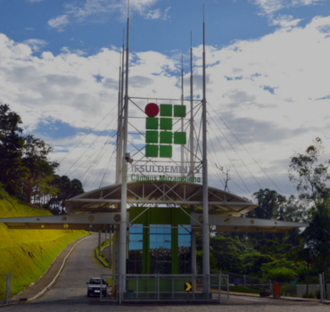
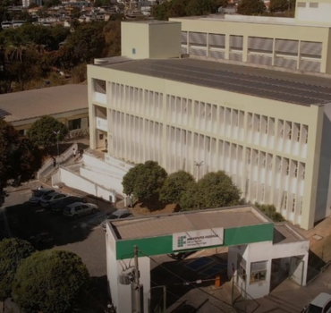
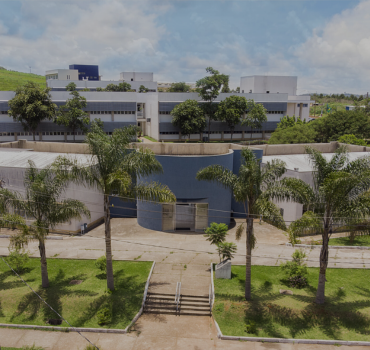
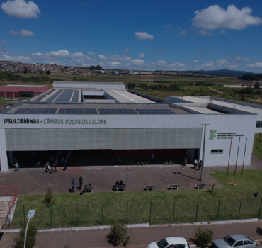
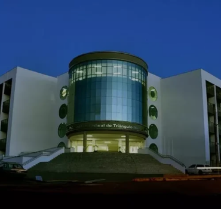

Onde Estudar?
Encontre as principais instituições públicas e gratuitas de ensino superior em tecnologia na nossa região.

IFSULDEMINAS - Campus Passos
- Cursos de TI Oferecidos: Bacharelado em Ciência da Computação.
- Faixa Aproximada (SISU):
- Ampla Concorrência (AC): ~680 a 710 pontos.
- Escola Pública (EP / Cotas): ~610 a 640 pontos.
- Distância Rodoviária: 0 km (Na própria cidade).
- Modalidade de Ingresso: Processos próprios e SISU/ENEM.
- Regime de Turno: Período Diurno/Integral.
- Duração Regulamentar: 4 anos.
- Site Oficial: portal.pas.ifsuldeminas.edu.br

UEMG – Unidade Passos
- Cursos de TI Oferecidos: Bacharelado em Sistemas de Informação.
- Faixa Aproximada (Ingressos Recentes):
- Ampla Concorrência (AC): ~620 a 660 pontos.
- Escola Pública (EP / Cotas): ~550 a 590 pontos.
- Distância Rodoviária: 0 km (Na própria cidade).
- Modalidade de Ingresso: Conforme editais (Vestibular UEMG e/ou SISU).
- Regime de Turno: Período Noturno.
- Duração Regulamentar: 4 anos.
- Site Oficial: uemg.br

UFLA – Campus São Sebastião do Paraíso (ICTIN)
- Cursos de TI Oferecidos: BICT.
- Faixa Aproximada (SISU):
- Ampla Concorrência (AC): ~640 a 680 pontos.
- Escola Pública (EP / Cotas): ~580 a 610 pontos.
- Distância Rodoviária: ~50 km.
- Modalidade de Ingresso: SISU/ENEM.
- Regime de Turno: Período Diurno/Integral.
- Duração Regulamentar: 3 anos (BICT), possibilidade de +2 anos em Eng. de Software (conforme normas).
- Site Oficial: ictin.ufla.br

IFSULDEMINAS – Campus Muzambinho
- Cursos de TI Oferecidos: Ciência da Computação e Sist. para Internet.
- Faixa Aproximada (SISU):
- Ampla Concorrência (AC): ~630 a 670 pontos.
- Escola Pública (EP / Cotas): ~570 a 600 pontos.
- Distância Rodoviária: ~105 km.
- Modalidade de Ingresso: Processos próprios e SISU/ENEM.
- Regime de Turno: Opções Diurnas e Noturnas.
- Duração Regulamentar: 3 a 4 anos.
- Site Oficial: portal.muz.ifsuldeminas.edu.br
UNIFAL-MG – Campus Sede Alfenas
- Cursos de TI Oferecidos: Bacharelado em Ciência da Computação.
- Faixa Aproximada (SISU):
- Ampla Concorrência (AC): ~660 a 700 pontos.
- Escola Pública (EP / Cotas): ~600 a 630 pontos.
- Distância Rodoviária: ~115 km.
- Modalidade de Ingresso: SISU/ENEM.
- Regime de Turno: Período Diurno/Integral.
- Duração Regulamentar: 4 anos.
- Site Oficial: unifal-mg.edu.br

IFMG – Campus Formiga
- Cursos de TI Oferecidos: Bacharelado em Ciência da Computação.
- Faixa Aproximada (SISU):
- Ampla Concorrência (AC): ~650 a 690 pontos.
- Escola Pública (EP / Cotas): ~580 a 610 pontos.
- Distância Rodoviária: ~145 km.
- Modalidade de Ingresso: Edital vigente (ENEM e/ou processo próprio).
- Regime de Turno: Período Diurno/Integral.
- Duração Regulamentar: 4 anos.
- Site Oficial: ifmg.edu.br/formiga

UNIFAL-MG – Campus Poços de Caldas
- Cursos de TI Oferecidos: BICT.
- Faixa Aproximada (SISU):
- Ampla Concorrência (AC): ~630 a 670 pontos.
- Escola Pública (EP / Cotas): ~580 a 610 pontos.
- Distância Rodoviária: ~170 km.
- Modalidade de Ingresso: SISU/ENEM.
- Regime de Turno: Período Diurno/Integral.
- Duração Regulamentar: 3 anos (BICT), possibilidade de +2 anos em Eng. de Computação (conforme normas).
- Site Oficial: unifal-mg.edu.br

IFSULDEMINAS – Campus Poços de Caldas
- Cursos de TI Oferecidos: Engenharia de Computação e Sist. para Internet.
- Faixa Aproximada (SISU):
- Ampla Concorrência (AC): ~650 a 690 pontos.
- Escola Pública (EP / Cotas): ~590 a 620 pontos.
- Distância Rodoviária: ~170 km.
- Modalidade de Ingresso: Processos próprios e SISU/ENEM.
- Regime de Turno: Diurno/Integral (Engenharia) e Noturno (Tecnologia).
- Duração Regulamentar: 3 a 5 anos.
- Site Oficial: portal.pcs.ifsuldeminas.edu.br

UFTM – Campus Uberaba
- Cursos de TI Oferecidos: Bacharelado em Sistemas de Informação.
- Faixa Aproximada (SISU):
- Ampla Concorrência (AC): ~640 a 685 pontos.
- Escola Pública (EP / Cotas): ~580 a 620 pontos.
- Distância Rodoviária: ~210 a 230 km.
- Modalidade de Ingresso: SISU/ENEM.
- Regime de Turno: Período Noturno.
- Duração Regulamentar: 4 anos.
- Site Oficial: uftm.edu.br
Nota Metodológica: Este guia consolida informações sobre instituições públicas de ensino superior localizadas em um alcance rodoviário aproximado de até 230 km de Passos/MG. As distâncias são estimadas via Google Maps. As faixas de nota foram obtidas por levantamento de diferentes edições recentes do SISU, não seguem metodologia estatística específica e servem apenas como referência comparativa para estudo.